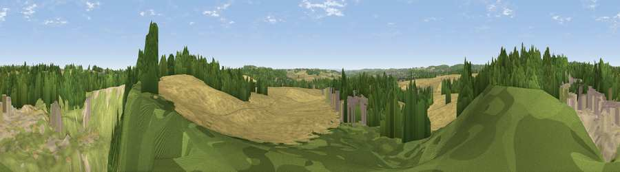

Viewpoint near Papplewick
#38936 in England · top 70% of its area beats it · near PapplewickWhere it is
The exact computed spot (SK 56925 52325). Click the marker for map links.
The view, rendered

A 360° render of this exact spot computed from the terrain model, tree cover and land cover — summer colours, afternoon light, calibrated against photographs of famous viewpoints. Real trees, hedges and buildings will differ in detail.
The panorama
Grey silhouette: terrain skyline in each direction (720 bearings, Earth curvature and refraction included). Dashed green: skyline with trees (+15 m) and buildings (+8 m) as obstacles. Blue strip: how far the ground is visible on each bearing.
Where the view opens
Wedge length = distance to the farthest visible ground on that bearing (vegetation-aware). Rings at 10, 25 and 50 km.
What fills the view
29% woodland · 28% grassland · 22% cropland · 16% bare ground · 5% built-up
Angular shares of the visible panorama (visual magnitude), not map area. Landscape diversity 0.65 (0–1 Shannon).
Key numbers
More beautiful places nearby
The staircase of upgrades: each row has a higher view potential than everything closer. Driving times are estimates from straight-line distance, calibrated against real road routing — check an actual route before setting out.
| Place | Direction | Drive | Score |
|---|---|---|---|
| Viewpoint near Papplewick | WNW · 0 km | ~1 min | 34.8 |
| Viewpoint near Calverton | ESE · 3 km | ~8 min | 45.8 |
| Viewpoint near Blidworth | NE · 4 km | ~10 min | 46.1 |
| Viewpoint near Calverton | SE · 5 km | ~12 min | 49.2 |
| Viewpoint near Calverton | SE · 6 km | ~12 min | 56.9 |
| Viewpoint near Arnold | SSE · 6 km | ~12 min | 64.1 |
| Burstheart Hill [Thoresby Colliery] | NNE · 17 km | ~30 min | 69.3 |
| Crich Stand | W · 23 km | ~37 min | 73.0 |
53.06514, -1.15196 · source: screening · position refined by local search. Computed location — check access rights before visiting.